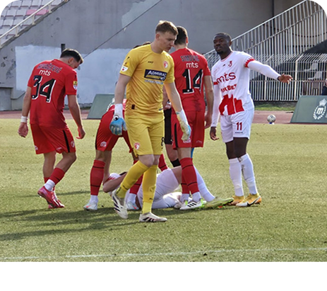

1
1:0
1
PEN 3-4
FK “RADNICKI NIS”
Duh juga, ponos Niša
UTAKMICE
NED, OCT 25
19:00
3d:14h:05m:35s
SUB, OCT 31
17:00
Vesti

Pobeda za kraj!
Fudbaleri Radničkog savladali su u poslednjem, sedmom kolu, plej-aut faze Superlige Srbije ekipu Spartaka. Duel na „Čairu“ završen je rezultatom 2:1 (0:0).
Pobeda za kraj!
Fudbaleri Radničkog savladali su u poslednjem, sedmom kolu, plej-aut faze Superlige Srbije ekipu Spartaka. Duel na „Čairu“ završen je rezultatom 2:1 (0:0).
Pobeda za kraj!
Fudbaleri Radničkog savladali su u poslednjem, sedmom kolu, plej-aut faze Superlige Srbije ekipu Spartaka. Duel na „Čairu“ završen je rezultatom 2:1 (0:0).